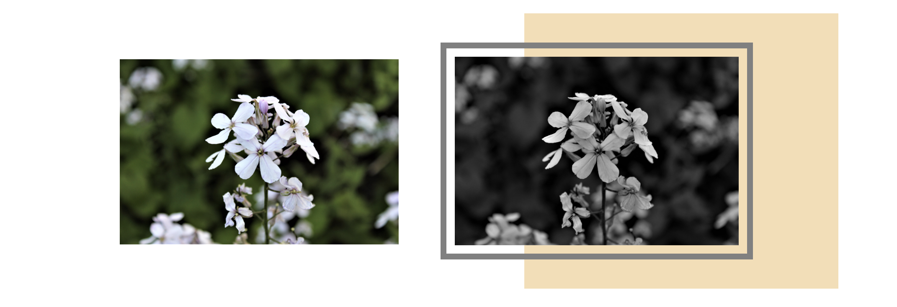

mylaksha.com
Buliding my Porttfolio ‐ 2019
mylaksha.com
The Idea:
Creating an eportfolio has been a professional development goal since 2018. 2018 brought on a lot of opportunities for me to develop my skills professionally. I wanted to create a space where I am able to collect and showcase the projects that I take part in throughout my college and professional career.
The Theme:
The theme for the website evolved throughout time. While the content that I
wished to display remained
the same, the color palette, the layout, and the navbars took some evolution
before they were implemented on the site.
The color palette was originally decided to be black, red and white. However, I
wanted the content that I put on the
site to be effectively highlighted. Giving a darker background to the site, made
most of the pictures along with the
text stand out on the page. The yellow color is sprinkled across the site
because it is muted enough that it
mimics white and adds a pop of color to the set template layout.
The sidenav was implemented in order to replace the outdated top navigation bar.
I wanted to have the
navigation be easily accesible to the viewer. Therefore, I made the navigation
options along with my logo and
name be displayed directly in line with the content and travel with each scroll
on the page. This increases the accessibility
that the viewer has to their navigation options throughout the site.
The theme iterations are highlighted below:
Original:

Edit:

Final:
The Domain and The Logo:
The domain and logo are picked exclusively to match with the theme and purpose
of the site. This site is being
maintained in order to serve as a portfolio for me, Lakshmi Shaji. I chose the
logo to be just a simple L kind of
to mimic the bootstrap.com logo. It is meant to be simple, to the point and
easily understood to be a part of this
site by upholding the color theme. Additionally, the domain was chosen to be
mylaksha.com because laksha translates to
goal or ambition. This portfolio is a tool that I consider to be a stepping
stone in achiving my goals; hence it is appropriately
named.
The logo iterations are highlighted below:
Original:
Final:
Photography CSS:
Photography is a hobby that I am looking to expand. I wanted to include this
section within the
site for the purpose of showcasing my photography skills as well as provide me
with a page for which
I could write custom CSS for. I visioned this page to include many photographs
displayed all across as if
they were hanging up on a wall. The outlines and the offset shadow boxes were
created
to mimic many of the instagram story editors that are available for
download.
The CSS additions made many of the photographs stand out and pop on the page. I
hope to expand
this page inorder to draw more focus to the pictures and make them individually
viewable to the
visitors of the site so that they are able to inspect the details of specific
photographs.
The photgraphy laytout iterations are highlighted below:
Original:

Final:

My Tools:
This portfolio is created with the use of Bootstarp version 4.3 and additional CSS accordingly written for each page.
Edits were made to existing photography with the use of Adobe Spark in order to create the carousel content.
Most of the photos used on this site come form my own photography portfolio.
Some photos have been taken from event photo banks with the permission of the perspective photographer.
When in doubt, clarify! W3Schools was a great resource to use when I am stuck on a problem!

TedxTempleU.com
Team Collaborations ‐ 2019